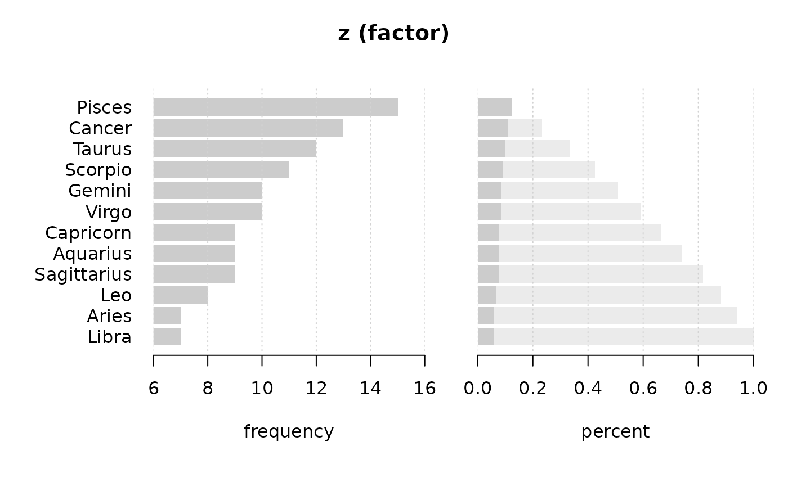

Zodiac.RdCalculate the sign of zodiac of a date.
Zodiac(x, lang = c("engl", "deu"), stringsAsFactors = TRUE)The really relevant things can sometimes hardly be found. You just discovered such a function... ;-)
The following rule to determine zodiac symbols is implemented:
Dec. 22 - Jan. 19 : Capricorn
Jan. 20 - Feb. 17 : Aquarius
Feb. 18 - Mar. 19 : Pisces
March 20 - April 19 : Aries
April 20 - May 19 : Taurus
May 20 - June 20 : Gemini
June 21 - July 21 : Cancer
July 22 - Aug. 22 : Leo
Aug 23 - Sept. 21 : Virgo
Sept. 22 - Oct. 22 : Libran
Oct. 23 - Nov. 21 : Scorpio
Nov. 22 - Dec. 21 : Sagittarius
character vector or factor with the zodiac.
Year and other date functions
Zodiac(as.Date(c("1937-07-28", "1936-06-01", "1966-02-25",
"1964-11-17", "1972-04-25")), lang="deu")
#> [1] Loewe Zwillinge Fische Skorpion Stier
#> 12 Levels: Steinbock Wassermann Fische Widder Stier Zwillinge Krebs ... Schuetze
d <- sample(seq(as.Date("2015-01-01"), as.Date("2015-12-31"), 1), 120)
z <- Zodiac(d)
Desc(z)
#> ------------------------------------------------------------------------------
#> z (factor)
#>
#> length n NAs unique levels dupes
#> 120 120 0 12 12 y
#> 100.0% 0.0%
#>
#> level freq perc cumfreq cumperc
#> 1 Pisces 14 11.7% 14 11.7%
#> 2 Taurus 14 11.7% 28 23.3%
#> 3 Virgo 12 10.0% 40 33.3%
#> 4 Cancer 11 9.2% 51 42.5%
#> 5 Libra 11 9.2% 62 51.7%
#> 6 Gemini 10 8.3% 72 60.0%
#> 7 Capricorn 9 7.5% 81 67.5%
#> 8 Aries 9 7.5% 90 75.0%
#> 9 Leo 9 7.5% 99 82.5%
#> 10 Aquarius 8 6.7% 107 89.2%
#> 11 Scorpio 8 6.7% 115 95.8%
#> 12 Sagittarius 5 4.2% 120 100.0%
#>
